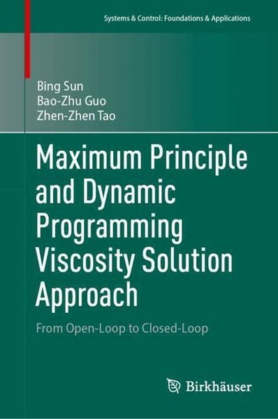

<HTML>

<BASE HREF="https://sunamss.github.io/b1.html">

<HEAD>
<TITLE>Maximum Principle and Dynamic Programming Viscosity Solution Approach - From Open-Loop to Closed-Loop</TITLE>

<link rel="icon" href="lion_courage.png">
	
 <style>
   		body{margin: 30px;}
	</style>
 
</HEAD>

<BODY>

	
<table border="0">
<tr>
<td>  &nbsp; &nbsp; </td>
<td>   </td>
<td>  &nbsp; &nbsp; &nbsp; &nbsp; &nbsp; &nbsp; &nbsp; &nbsp; &nbsp; &nbsp; </td>
<td> 
<td>  
<H1> Maximum Principle and Dynamic Programming Viscosity Solution Approach<BR>  </H1>
<H2> From Open-Loop to Closed-Loop <BR><BR>  </H2>
	
<H3> Bing Sun, Bao-Zhu Guo & Zhen-Zhen Tao<BR> </H3>
Systems & Control: Foundations & Applications<BR> 
Springer Nature, Birkhäuser Singapore<BR>
350 Pages, Hardcover ISBN 978-981-96-5738-4<BR>
May 2025 <BR><BR>

[<A HREF="https://www.amazon.com/Principle-Programming-Viscosity-Solution-Approach/dp/9819657385" target="_blank">Amazon</A>, 
	<A HREF="https://www.amazon.com/Principle-Programming-Viscosity-Solution-Approach/dp/9819657385" target="_blank">Amazon</A>,
	<A HREF="https://www.amazon.com/Principle-Programming-Viscosity-Solution-Approach/dp/9819657385" target="_blank">Amazon</A>,
	<A HREF="https://www.amazon.com/Principle-Programming-Viscosity-Solution-Approach/dp/9819657385" target="_blank">Amazon</A>]

<!-- -------------------------------------------------------------

<video autoplay="" id="bgVideo" loop="" muted="" poster="">
	<!-- Video is embedded in the WEBM format -->
	
	<!-- Video is embedded in the MP4 format -->
	<!-- <source src="./slide video.mp4" type="video/mp4"></video> -->
 <!-- ------------------------------------------------------------- -->
	
</H2>
</td> 
</td>
</tr>
</table> 

 
  <P>
 
<HR>
<!-- ------------------------------------------------------------- -->


<P>
 

<H2>About this book </H2>
<tr>
<td> This book is concerned with optimal control problems of dynamical systems described by partial differential equations (PDEs). 
	The content covers the theory and numerical algorithms, starting with open-loop control and ending with closed-loop control. 
	It includes Pontryagin's maximum principle and the Bellman dynamic programming principle based on the notion of viscosity solution. 
	The Bellman dynamic programming method can produce the optimal control in feedback form, making it more appealing for online implementations and robustness. 
	The determination of the optimal feedback control law is of fundamental importance in optimal control and can be argued as the Holy Grail of control theory.<P>

The book is organized into five chapters. Chapter 1 presents necessary mathematical knowledge. Chapters 2 and 3 (Part 1) focus on the open-loop control while Chapter 4 and 5 (Part 2) focus on the closed-loop control. 
In this monograph, we incorporate the notion of viscosity solution of PDE with dynamic programming approach. The dynamic programming viscosity solution (DPVS) approach is then used to investigate optimal control problems. 
In each problem, the optimal feedback law is synthesized and numerically demonstrated. The last chapter presents multiple algorithms for the DPVS approach, including an upwind finite-difference scheme with the convergence proof. 
It is worth noting that the dynamic systems considered are primarily of technical or biologic origin, which is a highlight of the book.<P>

This book is systematic and self-contained. It can serve the expert as a ready reference for control theory of infinite-dimensional systems. 
These chapters taken together would also make a one-semester course for graduate with first courses in PDE-constrained optimal control.
</td>

<td>  &nbsp; &nbsp; &nbsp; &nbsp; &nbsp; &nbsp; &nbsp; &nbsp; &nbsp; &nbsp; </td>
<td> 
<td> 	

<HR>
<!-- ------------------------------------------------------------- -->
	
<H2>Contents </H2> 

	 

<P>
	
Preface <BR><BR>
	
Chapter 1. Mathematical Preliminary <BR>
1.1. Cones and dual cones <BR>
1.2. Semigroup theory <BR>
1.3. Calculus of variations and optimal control <BR>
1.4. Pontryagin's maximum principle <BR>
1.5. Dynamic programming approach and viscosity solution <BR>
1.6. Numerical solution of optimal control <BR><BR>
	
<b>Part 1. Open-Loop Control </b><BR>
Chapter 2. Dubovitskii-Milyutin Approach <BR>
2.1. Necessary optimality condition <BR>
2.2. Determination of cones <BR>
2.3. Finite-dimensional system control <BR>
2.4. Optimal control of vibrations of an elastic beam <BR>
2.5. Optimal control of sterilization of prepackaged food <BR><BR>
	
Chapter 3. Spectral Method <BR>
3.1. The spectral approximation <BR>
3.2. Optimal control of a fourth-order PDE with state constraint <BR>
3.3. Flow optimal control problem with control constraint <BR>
3.4. A fourth-order parabolic optimal control problem <BR><BR>
	
<b>Part 2. Closed-Loop Control </b><BR>
Chapter 4. Dynamic Programming Viscosity Solution Approach <BR>
4.1. Optimal control of HIV/AIDS <BR>
4.2. Optimal feedback control of continuous casting process <BR>
4.3. Optimal birth feedback control of population dynamics <BR><BR>
	
Chapter 5. Multiple Algorithms for DPVS Approach <BR>
5.1. A direction derivative algorithm <BR>
5.2. An interpolation algorithm <BR>
5.3. Time dierence and time-space approximation schemes <BR>
5.4. A local approximation algorithm <BR>
5.5. Convergence of an upwind nite-dierence scheme <BR><BR>
	
Bibliography <BR><BR>

Index <BR><BR>
	
Alphabetical Index  
</td>
	
</tr>


<HR>
<!-- ------------------------------------------------------------- -->

<H2>
Keywords
</H2>

<P>
Optimal Feedback Control, Viscosity Solution, Dynamic Programming Approach, Numerical Solution, Convergence, PDE-Constrained Optimization

<BR><BR>
 
<BR>

Go back to <A HREF = "https://sunamss.github.io/">the index page</A>!
 
<BR> 
 
</BODY>
</HTML>
